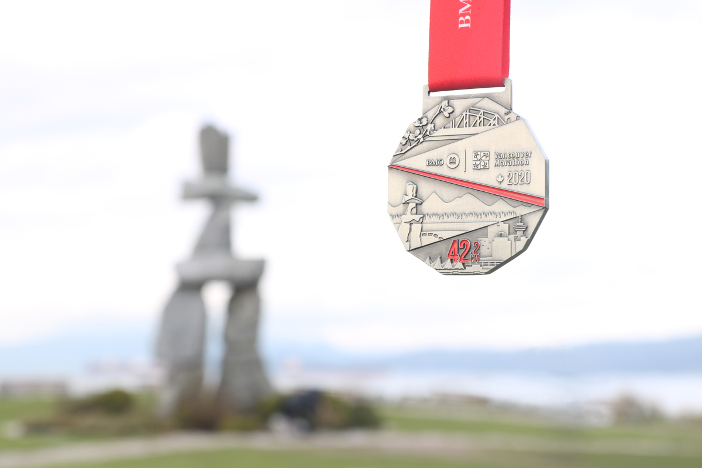

I came up with the title of this post when I was at the peak of runner’s high that is after running a full marathon last weekend. I’ll be grateful if it inspires you but this its a note to self when I’ll need the reminder. This is not the first time I ran a marathon but its the first time I felt good. Yes, you read that right, I felt good even while running up a heart attack hill, I felt good on mile 23, I felt good as I finished and I felt especially good when I was functional again in 2 hours. Netflix also feels good but have you tried feeling invincible? I’m confident about my invincibility because a marathon is not an achievement you stumble upon, its not a intrinsic talent (at least not for me) and luck only goes as far as good weather. This is an achievement that is attained by intense focus, consistent effort and hard work; things that are transferable to any seemingly unachievable task.
Its all started with commitment. I made the commitment at the end of last year because toxic words had started creeping into my mind. Even though I had done a marathon before, I was terrified of the word full marathon; Although I had done a couple of half-marathons, it seemed impossible to improve my speed. Words such as can't , impossible, its not for everyone appear harmless but their toxicity is highly infectious, you may start hearing them after one setback but they easily spread out to other facets of life, before you know it you have established permanent residence in your comfort zone. There is no shortcut out of this zone except through intention and effort. I signed up for Vancouver Marathon to change the narrative, to trust myself to do the impossible against all odds.
For most people running 26 miles is unnatural, fact is without training anything longer than 10 miles is unnatural. However with proper training, any distance can feel natural. People train differently but it all comes to down to incremental steps and lots and lots of sweat. Months in advance it involved at least 22 miles a week and much dreaded strength training on off-running days. Just when I thought I had it figured out, came ridiculously long runs, which made me question this commitment. When under stress, the body’s natural reaction is to make you stop, which is why it throws fatigue, hunger, thirst, muscle cramps, chaffing et al your way. If that doesn’t work, it goes the mental route and throws suppressed memories and irrational fears. Since there is no turning back, there is no option but to prepare and power through, trusting that every step is not only bringing you closer to the finish line (even when it doesn’t seem like it) but also building you up.
Long runs are unnatural but the human body is elastic, with every stretch it comes out stronger and better prepared, both physically and mentally.
Even after months of training, a marathon doesn’t run itself. Thinking about it especially when recovering from training runs can be triggering. Wanna know my secret? I tricked myself. I marked my calendar with Non-marathon, I told myself I would just run 10 miles and go further if I could. After months of pushing myself, I decided to make it a journey of gratitude. Everytime my watch signaled a mile, I thanked my body, everytime I ran uphill, I thanked it, everytime I realized I was in the zone that I forgot the pain, I thanked it too. In return my body co-operated; instead of bad memories I got flow, in place of fatigue I was energised, we were working together, we trusted each other. I think I believe Jack Canfield when he wrote: “The more you are in a state of gratitude, the more you will attract things to be grateful for”.
You may be wondering, Why a marathon? Is it worth it? What else is it good for? I don’t about you but the world is my oyster, at least it feels like it. I’m the most fit I’ve ever been and I know I can run for hours straight, I can focus intensely, I can grow, challenges make me stronger. I’m confident I can do anything I put to my mind to, it may take longer but I will get there. I got there and realized 26.2 was just an arbitrary number, the limit is whatever I want it to be.
Note: Due to the pandemic, this marathon was virtual, I found this guide to useful for long runs. All the best and Stay safe!